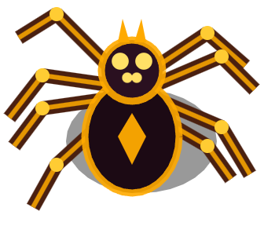
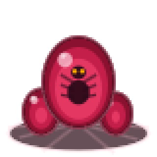
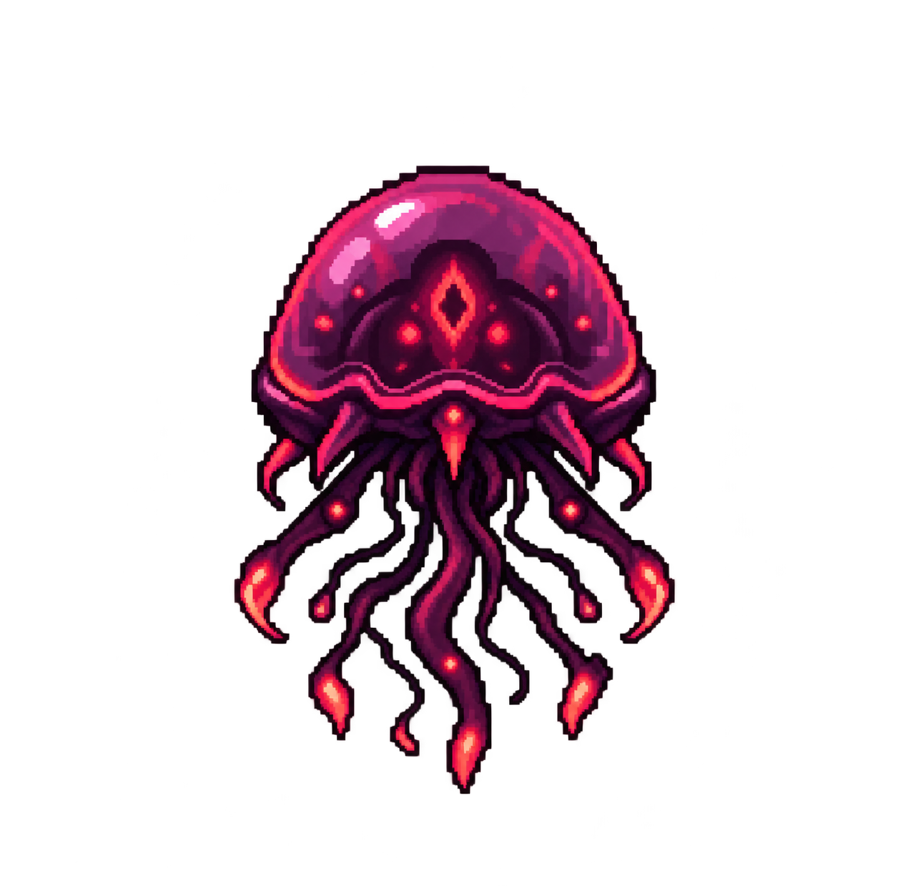

ARÁCNIDO HOSTIL
Organismo territorial que patrulla el entorno y persigue a cualquier intruso detectado.
EXPEDICIÓN CLASIFICADA // 7-B
Un planeta hostil. Especímenes desconocidos.
Una misión que puede costar la vida.
Cláusula 7-B: El personal asignado deberá ingresar al territorio de investigación, localizar los especímenes biológicos y recuperar las muestras solicitadas por la corporación.
La supervivencia del personal no garantiza el éxito de la misión. La extracción deberá realizarse siguiendo los protocolos establecidos.
Los siguientes organismos han sido identificados durante las expediciones previas. Evite el contacto directo con cualquier organismo desconocido.

Organismo territorial que patrulla el entorno y persigue a cualquier intruso detectado.

Muestra de origen desconocido. Requiere manipulación cuidadosa durante su recuperación.

Organismo de amenaza elevada. Su presencia representa un riesgo crítico para el personal.
El personal deberá utilizar sus recursos y habilidades para completar la misión y regresar a la zona de extracción.
Recorre el terreno para localizar huevos, enemigos y puntos de interés.
Recupera las muestras biológicas mediante el procedimiento de extracción correspondiente.
Utiliza el armamento disponible para defenderte de los organismos hostiles.
Evita los ataques enemigos y administra tus recursos durante la expedición.
Al completar los objetivos, dirígete a la zona de aterrizaje antes de que termine el tiempo.
Mantente alerta ante organismos de mayor tamaño y comportamiento impredecible.
El proyecto utiliza tecnologías web para desarrollar una experiencia interactiva ejecutada directamente desde el navegador.
El juego está disponible de forma gratuita en Itch.io. No requiere descarga.
▶ ABRIR EN ITCH.IO